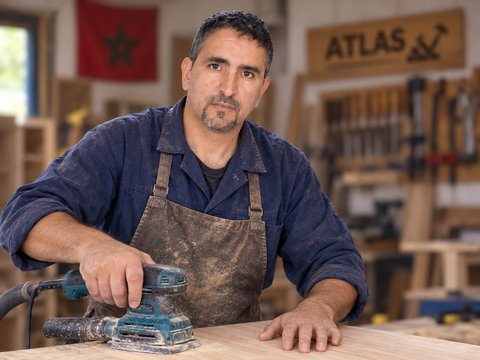

22 años
de experiencia en carpintería
4
talleres dirigidos o gestionados desde 2009
2001
título de carpintería, Instituto de Formación Profesional de Inzegane
Abdel Krim May
Carpintero autónomo en la región de Agadir desde 2016, anteriormente dirigí mi propio taller en Biougra y luego en Dcheira, y gestioné la carpintería de un camping antes de eso. A lo largo de más de 22 años he sido tanto jefe de equipo como propietario de taller — la lectura de planos técnicos, la estimación de costes y la gestión de equipos forman parte de mi día a día desde hace tiempo.
Atelier Atlas es mi forma de poner este saber hacer artesanal al servicio de particulares y profesionales en Europa, combinando herramientas digitales (planos, cálculos, visualización) con una práctica del oficio adquirida sobre el terreno.
El objetivo de Atelier Atlas es simple: preparar proyectos de carpintería serios y precisos, a distancia, y ofrecer la fabricación a medida en Marruecos para quienes lo deseen.
La información de la empresa (forma jurídica, número de identificación) se añadirá en cuanto esté disponible.